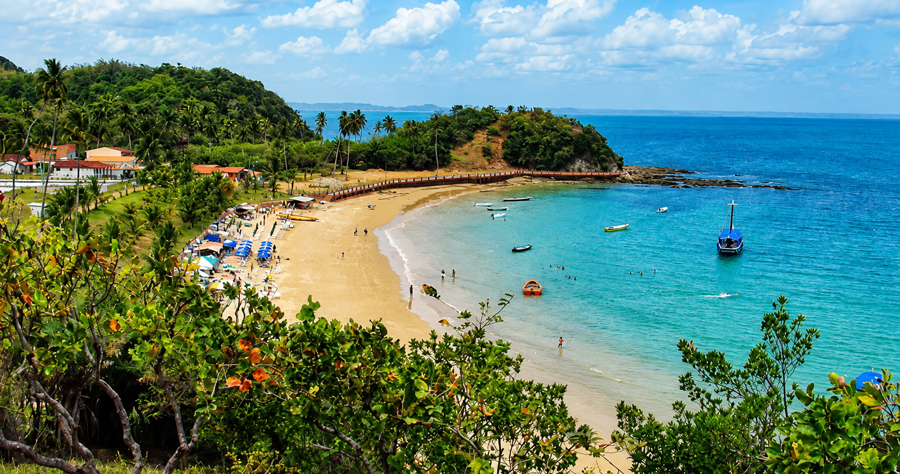

01 / Causa
Pesca e Mariscagem
Mais valorização para quem vive do mar: renda digna, proteção dos manguezais e reconhecimento oficial das marisqueiras.

Filha da Ilha de Maré, Luana do Brasil conhece de perto a realidade do povo quilombola e de quem vive da pesca, da mariscagem, do trabalho, da resistência e da esperança. Sua história é marcada pela coragem de enfrentar desafios e pela dedicação às pessoas que, durante muito tempo, ficaram sem voz em Brasília.

Cada prioridade nasce de quem Luana conhece de perto: o povo da Ilha de Maré, os quilombolas, as marisqueiras, as mulheres e a juventude da Bahia.
Mais valorização para quem vive do mar: renda digna, proteção dos manguezais e reconhecimento oficial das marisqueiras.

Respeito, direitos territoriais e oportunidades para comunidades que guardam a história viva da Bahia.

Mais proteção, autonomia e políticas públicas que coloquem as mulheres no centro das decisões.

Educação, qualificação e emprego para que a nova geração construa seu futuro sem precisar deixar a Bahia.

Fortalecimento da produção e incentivo real ao pequeno produtor que alimenta a Bahia.

Uma Bahia onde todas as pessoas tenham oportunidades: do centro às periferias, do litoral ao sertão.
Luana acredita que um mandato deve estar presente nas comunidades, dialogando com as pessoas e transformando suas necessidades em ações concretas.